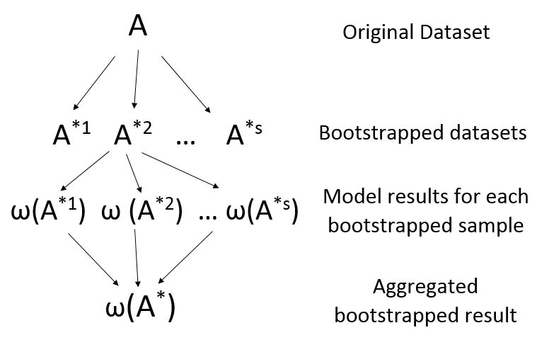
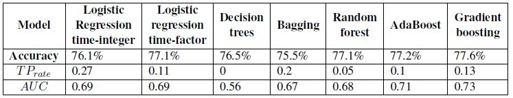
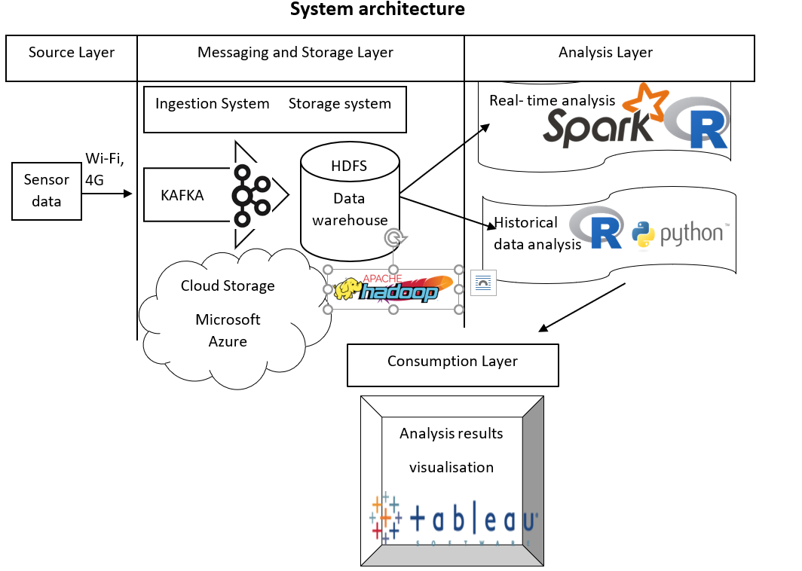
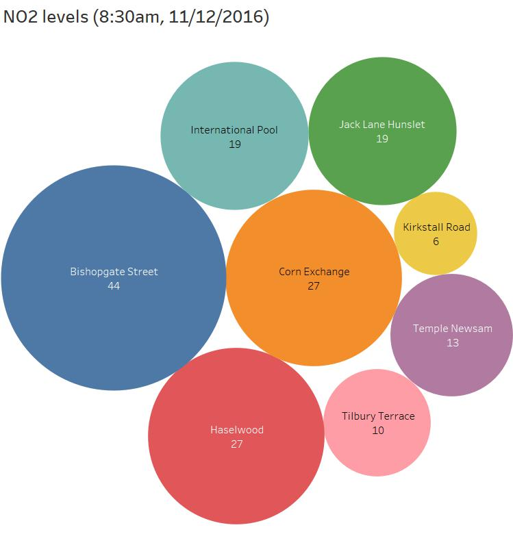

Agent based modelling represents a way to model the dynamics of complex (adaptive) systems (Macal and North, 2005).
The type of systems being model can vary from modelling human behaviour to the way animals move and interact.
During the GEOG5995 Programming for Social Scientists module from Leeds University, I have acquired the basic skills required to
create such a model. The code written in the project can be found on the following link.
While the model is not based on a real dataset, it simulates an interaction between sheep and wolves, where if
the wolves and sheep are in close proximity to each other, the sheep get eaten by the wolves. If the code is run an amination of
the process is generated. One of the aminations produced was save and can be visualized by hovering the mouse pointer over it
(if the mouse pointer is hovered out, the animation goes to the initial frame)
Studies have shown that one why to improve performance of weak learners is to used ensemble
methods; which by combining the results of multiple weak learners through different
methods a more reliable models is obtained.
To a simpler level, this idea was first discussed by Galton in 1907 in his well know example
with guessing the weight of the ox, where the average of all random guesses, was the closest answer
to the true value. This idea was also detailed by Surowiecki (2005) in his book, Wisdom of
the crowds. Both him and Galton, agree that the crowd is only smarter than the individual, when
those forming the crown are unbiased, meaning there is diversity, independence, decentralisation
and some form of aggregation must be achieved. These characteristics are the building blocks
for a successful ensemble. This brings us to Bagging.
BOOTSTRAP AGGREGATING (Bagging)
Bagging comes from BOOTSTRAP AGGREGATING, where bootstrap is method which
randomly samples with replacement from an original dataset to generate new slightly distinct
sets (DIVERSITY). The generic steps for this process are represented bellow:

RANDOM FORESTS
Random Forests are an improved version of bagging. In this algorithm, the number of variables
to chose from at each split is limited. A new random sample of candidate predictors is
generated at each split from which only one can be used. In doing so, variables which were less
likely to be chosen before, now have higher chance and the trees are decorrelated.
BOOSTING
Another ensemble methods is BOOSTING. Rather than generating
diversity form the beginning, in BOOSTING the learning process readjusts with each iteration
by choosing to use or not certain records from the training set.
One of the early boosting algorithms developed was AdaBoosting by Freund and Schapire
(1996). This can decrease training error of unstable methods (weaklearners) classification trees,
by using a weighted majority voting scheme. The algorithm assigns higher weights to harder
to classify examples, meaning that later trees tend to focus more on these examples and so the
algorithm learns from its mistakes.
R + DATA SET
These theoretical aspects can implemented with the help of the R software. This
gives users the possibility to change the pre-set values of the parameters of interest in order to
find values which give the best accuracy rates.
In terms of the dataset used, it contains information about
road accident in the UK in 2016.
Some data cleaning steps were required, such as reduction of variable, value imputation for
missing records and clustering of Police Force to reduce the number of levels in order to accommodate
the use of functions in R.
Overall 20 variables were kept from the original dataset, where the variable of interest is a
binary one which answers the question: will police officers go to the scene of an accident or not.
The most important aspect of this dataset is that it is unbalanced as 76.6%
of the cases belong to just one class. This is an important aspect as it can have negative effects
on model performance and it also makes accuracy a less reliable way of measuring model efficiency.
RESULTS+ MODEL COMPARISON
To see how ensemble methods differentiate from other classical models, logistic regression
and decision trees were also constructed with the same dataset. As mentioned before, the analysis was done in R and an
example of the code is provided on the following link.
Moreoverlooking just at accuracy levels would not offer a reliable way for benchmarking models performance, due to data
unbalanced, hence TPrate along with AUC scores were also used.
When looking at accuracy rates it can be seen that Logistic regression when time is treated as
an integer, decision trees and especially Bagging are doing worst than just assigning all points to
the negative class, which has a prevalence of 76.6%. In terms of TPrates DT is never predicting
the positive class. A surprising result is that of logistic regression when time is treated as an
integer. This model has the highest TPrate value, but this is not to say it is a good model as its
accuracy is marginally under that of just making an informed guess, and the predictability rate
of positive classes is still too low. At the same time, what Breiman (1996), Friedman (2002) and
others, argued was that ensembles can enhance the performance of a weak learners. From this
angle, both bagging and boosting methods show better results than decision trees.

CONCLUSION
Overall, no variable can be considered as a very strong predictor regardless of what some
models (i.e Decision trees, Gradient Boosting) might suggest. From the police force variable
analysis, it could be concluded that more conclusive results would be obtained if the models
were fitted at a region, or even just police force level, rather than at country level. With regards
to general model performance, ensemble models’ results were better than those of weak learners,
with the only exception being simple bagging. Nevertheless, none of the models used provide
compelling evidence to suggest they are good models. For future analysis, methods such as
neural networks can be tried along with additional variables such as age of the driver, was
alcohol consumed before driving etc..
At the centre of any smart city there is big data. This data can be collected from sensors, smart devices, cameras.
The type of data generated is not structured and therefore harder to analyse, use in a logical way.
To facilitate this process, big data systems were developed to perform specific tasks which are required to obtain a result
or reach a decision. For these systems to work efficiently, a system architecture must be put in place.
For example, the main requirement for a city to be smart is to have a well-developed system infrastructure.
However, this infrastructure can be composed of other little architectures designed for the different sections that form a smart city.
One such segment would be monitoring air quality. Even when considering just the chemical compounds in the air, a big
data system architecture must be put in place so that data can be accessed by everyone. Designing such a system can be challenging
and expertise from various fields is required to achieve a good network, with a constant need for improvements being necessary.
For example the bellow figure describes how systems measuring air quality in Leeds,
would be deployed in a practical way

The first step would be to decide what type of sensors to use and where to place them.
After that, data will go through a streaming software Apache Kafka before being stored.
Once streamed, data will be stored in a cloud environment such as Microsoft Azure.
Hadoop needs to be deployed so that the data can be saved in the HDFS file system from where it can be used for
both batch processing and live analysis.
In this system, there could be both dynamic analysis and analysis of historic data. In the first case,
Apache Spark will need to be used as the bridge between HDFS and Python
for providing real-time analysis. The output for this scenario will be dependent on what the consumer wants to know.
For example, a citizen might what to know the NO2 levels in a specific location before he leaves the house, so that he
can decide if that location would have a negative impact on his health or not. This is examplified in the bellow figure, which ,
that on the 11th of December 2016, at 8:30 am, Bishopgate street was one of the most polluted areas, followed by Corn Exchange
and Haslewood. On the other side, Kirkstall Road and Tilbury Terrace were the least polluted.

Dynamic analysis can also be useful to environmental
agencies, by offering them live notifications when NO2 emissions have reached a critical level. This type of notification will also
provide the location and predictions on whether the levels are likely to change in a few minutes or not, based on past data.